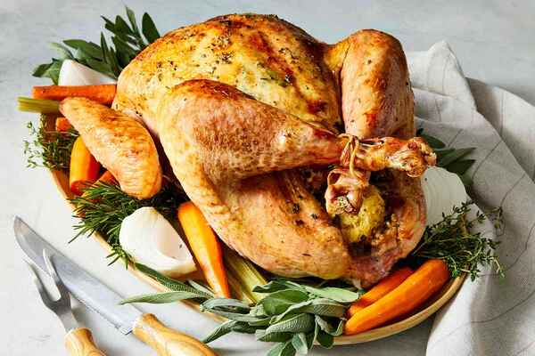

Herb-Roasted Turkey

Ingredients:
- 1 whole turkey (12-15 pounds)
- Herb Butter Mix:
- 1 cup unsalted butter, softened
- 4 garlic cloves, minced
- 2 tablespoons of fresh thyme leaves
- 2 tablespoons of fresh rosemary, chopped
- 2 tablespoons of fresh sage, chopped
- Salt and pepper, to taste
- 1 onion, quartered
- 2 celery stalks, chopped
- 2 carrots, chopped
- 2 cups of chicken broth
Instructions:
Prepare the herb butter:
- In a bowl, combine softened butter, minced garlic, thyme, rosemary, sage, salt, and pepper.
- Mix until well blended.
- Let mix sit.
Prepare the Turkey:
- Preheat the oven to 325°F (165°C).
- Remove giblets and neck from the turkey cavity.
- Rinse the turkey inside and out under cold water; pat dry with paper towels.
Season the Turkey:
- Gently loosen the skin over the turkey breast without tearing.
- Spread half of the herb butter under the skin.
- Rub the remaining herb butter all over the outside of the turkey.
Stuff and Truss:
- Fill the cavity with onion quarters, chopped celery, and carrots.
- Tie the legs together with kitchen twine.
Roast the Turkey:
- Place the turkey on a roasting rack in a large roasting pan.
- Pour chicken broth into the bottom of the pan.
- Roast for approximately 15 minutes per pound, or until a meat thermometer reads 165°F (74°C) in the thickest part of the thigh.
- Baste every 45 minutes with pan juices.
Rest and Carve:
- Remove from the oven and tent with foil.
- Let it rest for 20-30 minutes before carving.